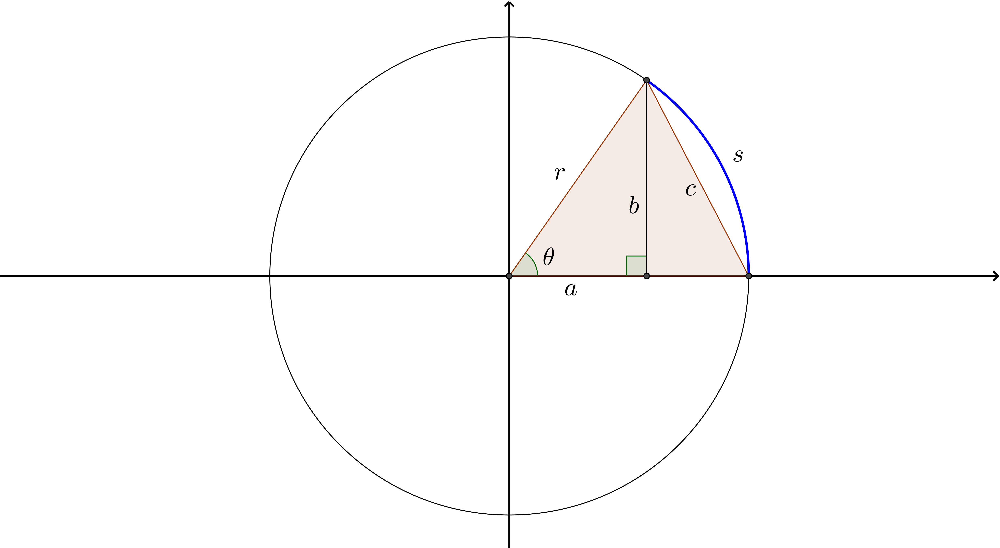

Be able to define evaluate \(\sin{\theta}\), \(\cos{\theta}\), \(\tan{\theta}\), \(\sec{\theta}\), \(\csc{\theta}\), and \(\cot{\theta}\) from a right triangle.
Solve the following problems by drawing a triangle.
Find all possible values of \(\sin{\theta}\) and \(\cos{\theta}\) given that \(\tan{\theta}=3\)
Find all possible values of \(\sin{\theta}\) and \(\tan{\theta}\) given that \(\displaystyle \cos{\theta}=\frac{2}{3}\)
Find all possible values of \(\tan{\theta}\) and \(\csc{\theta}\) given that \(\displaystyle \sec{\theta}=\frac{5}{2}\)
Compute the following:
\(\displaystyle \cos{\theta}\) if \(\displaystyle \sin{\theta}=-\frac{3}{5}\) and \(\theta\) is in Quadrant IV.
\(\displaystyle \tan{\theta}\) if \(\displaystyle \sec{\theta}=-\frac{9}{4}\) and \(\theta\) is in Quadrant III.
Use the given information to find the exact values of the remaining five trigonometric functions of \(\theta\).
\(\displaystyle \cos{\theta}=\frac{3}{5}\) and \(\displaystyle 0 < \theta < \frac{\pi}{2}\)
\(\displaystyle \cos{\theta}=\frac{3}{5}\) and \(\displaystyle -\frac{\pi}{2} < \theta < 0\)
\(\displaystyle \tan{\theta}=-\frac{1}{3}\) and \(\displaystyle \frac{\pi}{2} < \theta < \pi\)
\(\displaystyle \tan{\theta}=-\frac{1}{3}\) and \(\displaystyle -\frac{\pi}{2} < \theta < 0\)
\(\displaystyle \csc{\theta}=\sqrt{2}\) and \(\displaystyle 0 < \theta < \frac{\pi}{2}\)
\(\displaystyle \csc{\theta}=\sqrt{2}\) and \(\displaystyle \frac{\pi}{2} < \theta < \pi\)
A person is sitting in a Philadelphia movie theater waiting to watch the newest Star Wars movie. He is sitting \(d\) feet away from the screen. The angle of elevation between his eyes and the bottom of the screen in \(\alpha\) and the angle of elevation between his eyes and the top of the screen in is \(\beta\), as in the diagram below.
Express the height of the screen in terms of \(d\), \(\alpha\), and \(\beta\).
Suppose \(\theta\) is measured in radians and consider the following diagram:

Express \(a\), \(b\), and \(c\) in terms of \(r\) and \(s\) only. (Your answers may involve trigonometric functions.)